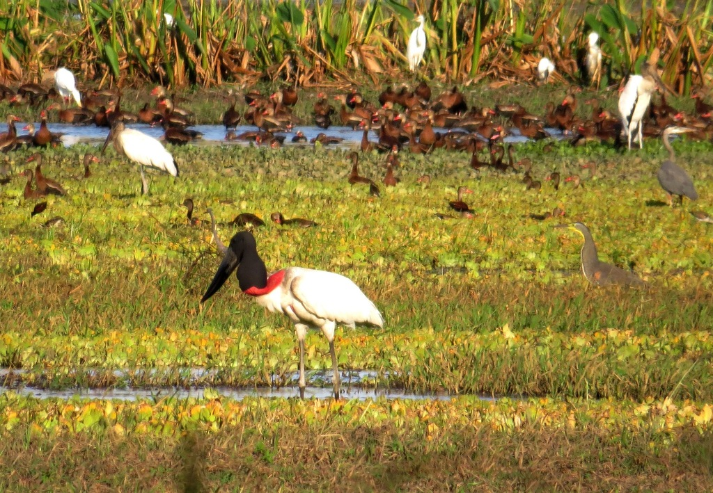

Es una especie de ave ciconiforme de la familia Ciconiidae; es la mayor cigüeña del Nuevo Mundo. Con una altura de 120-140 cm y una envergadura (alas desplegadas) de 3 metros, es una ave inconfundible de los humedales americanos desde Yucatán hasta la pampa argentina, siendo abundante en zonas como los llanos venezolanos o el pantanal. Se parece bastante a su pariente, el marabú africano, pero a diferencia de este no come cadáveres aunque sea carnívoro, prefiere pescar dentro del agua. No es un ave sociable. Se le encuentra en solitario; las parejas construyen nidos voluminosos sobre grandes árboles, con puestas de 2 a 4 huevos. Es el ave voladora más alta de Centro y Sudamérica, y la segunda del continente en envergadura superada por el cóndor andino (Vultur gryphus). En Venezuela se le conoce como garzón soldado y en Costa Rica es conocido como Galán sin ventura.

Jabiru en espejo de agua por paul_prior. Tomada en 2014.